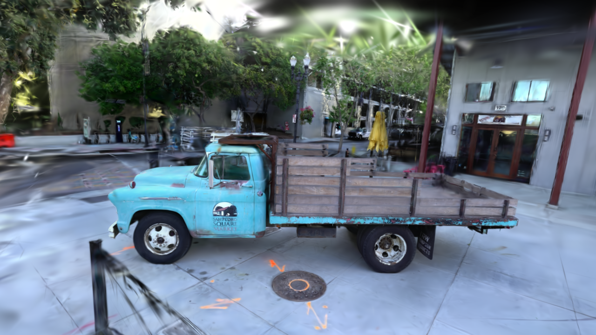
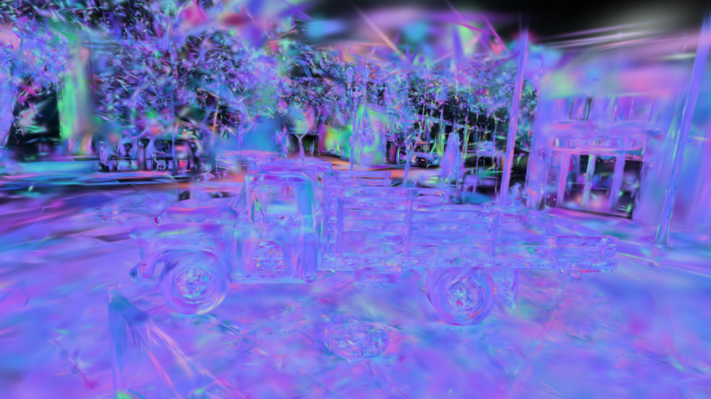

Gaussian Splatting¶
Train and render 3D Gaussian Splatting
scenes on Apple Silicon. MLX3D ships a Metal translation of the reference
CUDA rasterizer — tile-based forward and backward kernels — wrapped in
mx.custom_function so the whole pipeline is differentiable end to end.
Full script:
examples/train_gaussian_splatting.py.

Truck scene rendered from a trained 3DGS checkpoint with the MLX3D Metal rasterizer and anti-aliasing enabled.
How the renderer works¶
- Projection (pure MLX, autodiff): each Gaussian's quaternion + scale build a 3D covariance \( \Sigma = R S S^T R^T \), which the EWA splatting approximation maps to a 2D screen-space covariance \( \Sigma' = J W \Sigma W^T J^T \).
- Tile binning: Gaussians are assigned to all 16×16 pixel tiles their 3σ extent touches and sorted by (tile, depth) — fully vectorized MLX.
- Rasterization (Metal kernels): one threadgroup per tile streams its depth-sorted Gaussians through threadgroup memory while 256 threads alpha-composite their pixels front-to-back with early termination. The backward kernel traverses back-to-front and accumulates gradients with atomic adds — the same design as the reference implementation.
A pure-MLX reference renderer (render_gaussians_reference) verifies the
kernels: forward images match to float32 precision and all gradients match
the autodiff oracle to ~1e-7 relative error (see tests/test_splatting.py).
Rendering¶
import mlx.core as mx
from mlx3d.cameras import Camera
from mlx3d.splatting import render_gaussians
camera = Camera.look_at(eye=(0, 0, -4), at=(0, 0, 0), width=1280, height=720)
out = render_gaussians(
camera,
means, # (N, 3)
quats, # (N, 4) (w, x, y, z)
scales, # (N, 3) standard deviations (post-activation)
opacities, # (N,) in [0, 1]
colors=rgb, # or sh=... for view-dependent color
)
out["image"] # (720, 1280, 3) — differentiable w.r.t. all inputs
out["alpha"] # (720, 1280) accumulated opacity — also differentiable
For scenes with tiny/high-frequency splats, enable anti-aliasing:
out = render_gaussians(..., antialias=True)
This keeps the standard screen-space blur but applies the Mip-Splatting-style opacity compensation \( \sqrt{\det(\Sigma) / \det(\Sigma + \epsilon I)} \), which reduces over-bright subpixel Gaussians without changing the default 3DGS-compatible rendering path.
The same Metal path can render arbitrary per-Gaussian feature channels in chunks of three, reusing the RGB kernel and its backward pass:
from mlx3d.splatting import render_gaussian_features
features = mx.concatenate(
[depths[:, None], normals, semantic_logits], axis=-1
) # (N, C)
out = render_gaussian_features(
camera,
means,
quats,
scales,
opacities,
features,
normalize=True, # expected feature = sum(alpha_i T_i f_i) / alpha
)
out["features"] # (720, 1280, C)
Use normalize=False with a feature-space background when you want ordinary
alpha compositing instead of expected features.
The packaged render CLI exposes the same paths for checkpoints. These are real outputs from the truck checkpoint:

Expected depth and rendered Gaussian normal features from the same truck checkpoint.
On an M-series GPU, 100k Gaussians render at ~30 FPS at 720p, with a full forward+backward training step around 100 ms.
Training on a COLMAP scene¶
Any dataset prepared for the original 3DGS works as-is (a sparse/0
reconstruction plus an images/ folder):
python examples/train_gaussian_splatting.py --data /path/to/scene --iters 7000
To watch training as it happens, start the live viewer from the same command:
python examples/train_gaussian_splatting.py --data /path/to/scene \
--iters 7000 --downscale 4 --viewer
Pass --antialias to train with the same opacity compensation used by
render_gaussians(..., antialias=True).
The viewer opens a local browser page and polls lightweight metadata while
requesting rendered JPEG frames only when the view changes. Training publishes a
fresh evaluated Gaussian snapshot every --viewer-update-every iterations
(default: 25), so the preview does not copy the whole model to CPU or refresh
on every optimizer step. Use --viewer-no-browser on remote shells and
--viewer-keep-open if you want the viewer to remain active after training.
Press D in the viewer to switch between RGB and the forward-only Metal depth
map for geometry inspection, or M for a mesh-style depth-contour view.
What the script does, in code:
from mlx3d.datasets import load_colmap
from mlx3d.splatting import GaussianModel, GaussianTrainer, TrainerConfig
ds = load_colmap("scene/") # cameras, images, SfM points
model = GaussianModel.from_points(ds.points, ds.point_colors)
trainer = GaussianTrainer(model, TrainerConfig(), scene_extent=ds.scene_extent)
for it in range(7000):
cam, img = ds[it % len(ds)] # shuffle in practice
info = trainer.step(cam, img) # L1 + D-SSIM, ADC, SH growth
model.save_ply("point_cloud.ply") # standard 3DGS checkpoint
GaussianTrainer implements the paper's recipe:
- per-parameter Adam learning rates (positions scaled by scene extent and
exponentially decayed from
--position-lr-finalover--position-lr-max-steps), - loss \( (1-\lambda)\,L_1 + \lambda\,(1 - \text{SSIM}) \) with \( \lambda = 0.2 \),
- adaptive density control — screen-space positional gradients are accumulated per Gaussian; high-gradient small Gaussians are cloned, high-gradient large ones split, transparent/oversized ones pruned,
- periodic opacity resets and progressive SH degree growth.
The adaptive-density schedule is configurable from the training script:
--densify-from, --densify-until, --densify-every, and
--densify-grad-threshold. Gradient statistics are accumulated on the MLX
device and only synchronized when clone/split/prune runs, keeping normal
training steps GPU-resident. When densification changes the Gaussian table,
Adam moments are preserved for surviving Gaussians and initialized to zero for
new clone/split children.
The default optimization method is vanilla 3DGS. For fixed-budget experiments,
pass --method mcmc to replace clone/split growth with MCMC-style relocation:
low-opacity or unused Gaussians are moved near high-gradient Gaussians at
density-control events, Adam moments for moved rows are reset, and optional
SGLD-like xyz noise is controlled with --mcmc-noise-scale. Useful knobs are
--mcmc-relocate-frac, --mcmc-min-opacity, and --mcmc-jitter-scale.
For surfel-style experiments, pass --method 2dgs. This keeps the vanilla
Metal projection/rasterization path but clamps each Gaussian's local normal
axis to a thin disk, controlled by --2d-thickness as a fraction of scene
extent. The output remains a standard 3DGS PLY, so checkpoints still open in
the built-in viewer and other splat viewers.
2DGS geometry regularization is opt-in. --2d-depth-variance penalizes
per-pixel depth variance along a ray, and --2d-normal-consistency aligns
rendered surfel normals with normals derived from the expected depth map.
Both terms reuse the differentiable feature rasterizer, so they keep gradients
on the Metal-backed splatting path. --geometry-min-alpha controls which
pixels are included in those auxiliary losses.
For mesh extraction from a surfel-style checkpoint, use
GaussianModel.extract_surface_mesh(...). It filters Gaussians by opacity,
ranks capped samples by surfel footprint, uses each Gaussian's local normal
axis as the oriented point normal, and feeds those surfels to the Poisson
reconstruction utility.
For distorted or fisheye cameras, pass --projection ut in the training
script or projection="ut" in the render APIs. This uses a 3DGUT-style
Unscented Transform: six 3D sigma points are projected through the full
Camera.project_points model, then converted back to a 2D Gaussian. It is
slower than the default analytic EWA projection, but it respects Brown-Conrady,
fisheye, and orthographic camera projection.
For command-line renders:
mlx3d-render outputs/gs_truck/point_cloud.ply \
--out truck.png --width 1280 --height 720 --antialias --up 0 -1 0
mlx3d-render outputs/gs_truck/point_cloud.ply \
--mode depth --out truck_depth.png --up 0 -1 0
mlx3d-render outputs/gs_truck/point_cloud.ply \
--mode normal --out truck_normals.png --up 0 -1 0
Periodic saves render a deterministic held training view and report PSNR.
Set --eval-views N to average that save-time PSNR over N evenly spaced
training views while still saving the first rendered image. The default is one
view to keep periodic saves cheap.
For a standalone evaluation pass after training:
mlx3d-eval outputs/gs/point_cloud.ply --data /path/to/scene \
--format colmap --views 20 --json-out metrics.json
The command renders evenly spaced views and reports mean PSNR, SSIM, and L1
alongside per-view metrics. Use --format blender --split test for
NeRF-synthetic scenes and --antialias to score the anti-aliased render path.
Method variants
The default trainer remains vanilla 3DGS. MCMC-style fixed-budget
relocation is available with --method mcmc; surfel-style 2DGS is
available with --method 2dgs. The 2DGS depth-variance and normal-depth
consistency losses are explicit opt-ins rather than hidden changes to the
default path. The default projection remains fast analytic EWA; the
distortion-aware UT projection is selected explicitly with --projection ut.
Low-memory training (8-16 GB Macs)¶
Three independent knobs keep training inside a small unified-memory budget:
python examples/train_gaussian_splatting.py --data /path/to/scene \
--iters 7000 --downscale 2 --low-mem
--low-mem bundles:
--image-cache uint8— training views are held as uint8 instead of float32 (4x less; ~0.4 GB instead of 1.6 GB for the truck scene at half resolution). Use--image-cache diskto keep only file paths and decode per step (near-zero resident memory, ~10-30 ms/view decode).--max-gaussians 1200000— adaptive density control stops cloning and splitting at the cap (pruning continues), bounding model + optimizer memory.TrainerConfig(low_memory=True)— caps MLX's buffer cache (mx.set_cache_limit) and clears it after each densification, which is when shape churn would otherwise grow the cache by gigabytes.
The same options exist in the API:
ds = load_colmap("scene/", downscale=2, cache="uint8")
config = TrainerConfig(max_gaussians=1_200_000, low_memory=True)
As a rule of thumb, a 16 GB machine handles COLMAP scenes comfortably at
--downscale 2 --low-mem; on 8 GB add --downscale 4 and a lower
--max-gaussians.
COLMAP point clouds can contain sparse outliers. MLX3D caps the initial
nearest-neighbor Gaussian scale to 0.01 * scene_extent by default
(--init-scale-max-frac 0.01), which avoids full-screen opaque splats during
the first iterations. Pass --init-scale-max-frac 0 to disable the cap when
comparing against older behavior.
For quick timing and memory checks, use the benchmark helper:
python examples/benchmark_gaussian_splatting.py --data /path/to/scene \
--downscale 4 --steps 20 --seed 0 --eval-views 3 \
--save-render /tmp/mlx3d_bench.png
The JSON report includes startup/init time, first-step and warmup timings,
post-warmup mean/median/p90/p95/max step latency, render-stage timings,
density-event wall times, memory counters, and deterministic multi-view PSNR.
Use the same --seed, --eval-views, method, and densification settings when
comparing variants.
Blender-synthetic scenes¶
No SfM points? Initialize randomly:
python examples/train_gaussian_splatting.py \
--data nerf_synthetic/lego --format blender --iters 7000
Inspecting the result¶
Open any checkpoint in the interactive viewer — orbit, pan and zoom in the browser, rendered live by the Metal kernels:
mlx3d-view outputs/gs/point_cloud.ply
Checkpoints¶
save_ply / GaussianModel.load_ply use the standard 3DGS PLY layout
(f_dc_*, f_rest_*, opacity, scale_*, rot_*), so checkpoints open
directly in common viewers (SuperSplat, Polycam viewer, gsplat tools, ...)
and you can fine-tune checkpoints trained elsewhere.
For smaller deployment checkpoints, compact a trained model before saving:
compact = model.compact(
min_opacity=0.01,
max_gaussians=500_000,
target_sh_degree=2,
)
compact.save_ply("point_cloud_compact.ply")
Or run the packaged CLI:
mlx3d-compact outputs/gs/point_cloud.ply \
--out outputs/gs/point_cloud_compact.ply \
--min-opacity 0.01 --max-gaussians 500000 --sh-degree 2
Compaction ranks Gaussians by a view-independent footprint proxy,
opacity * max_scale^2, preserves retained row order, and can lower the
spherical-harmonic degree when view-dependent color detail is less important
than file size and render cost.
Current limitations
- One camera per
stepcall.